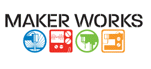
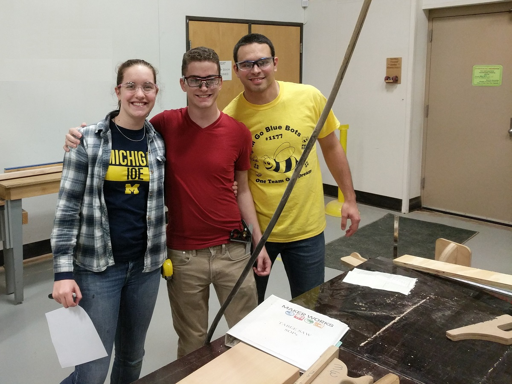
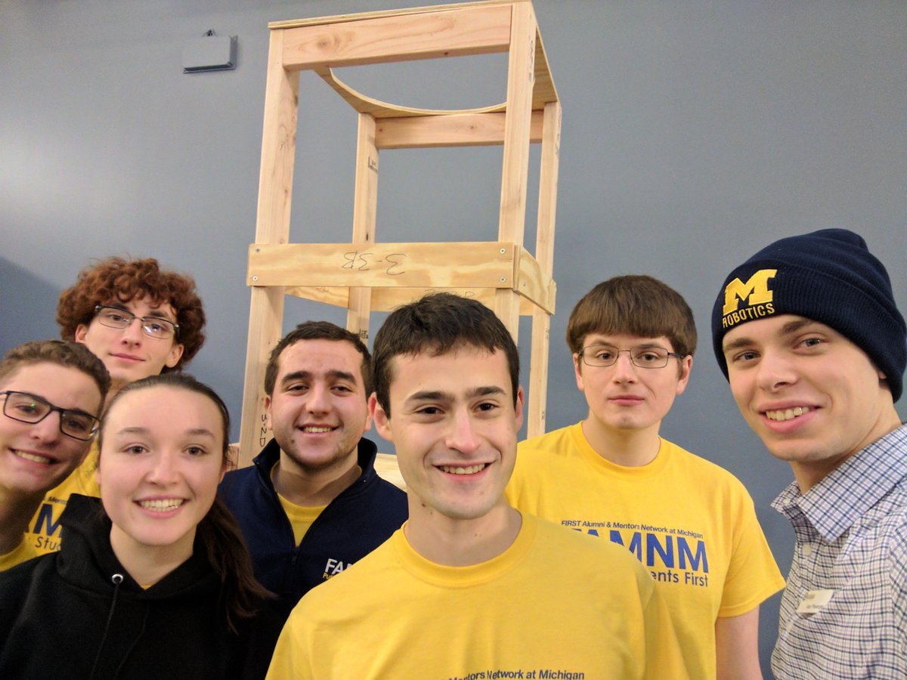

Maker Works is a community workshop in Ann Arbor that provides tools, space, and training for businesses, entrepreneurs, artists, makers, and more. They also provide resources for 5 local FIRST Robotics Competition teams. Maker Works has been a great supporter of FAMNM as well. We use their extensive woodshop to build the mock field for our FRC Kickoff each year.
For more information, check out their website: maker-works.com

FAMNM Members at Maker Works building the field for our 2017 FRC Kickoff

Field builders with the finished Steamworks boiler